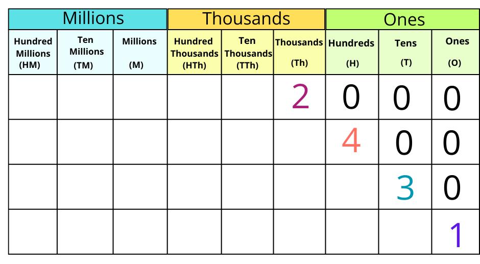
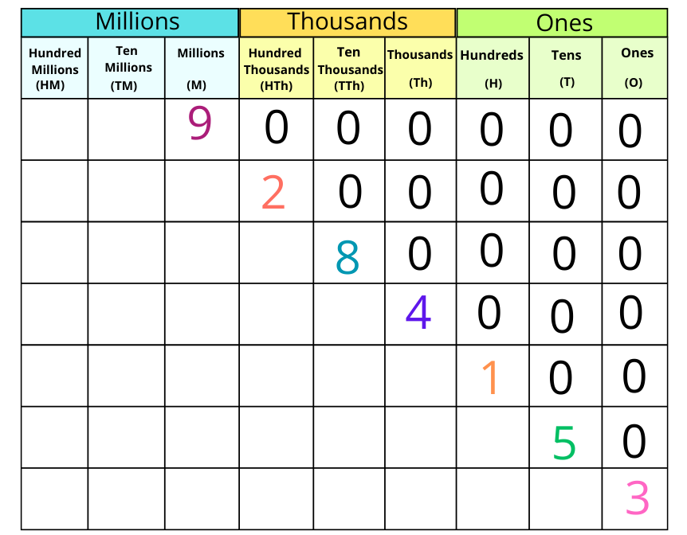
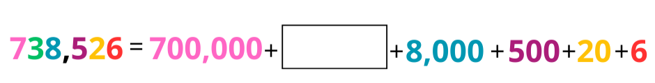
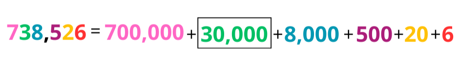
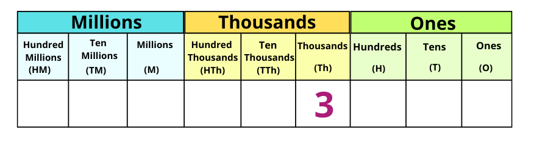
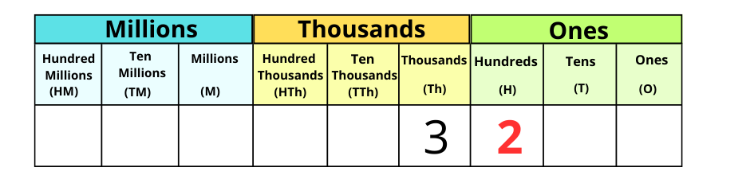
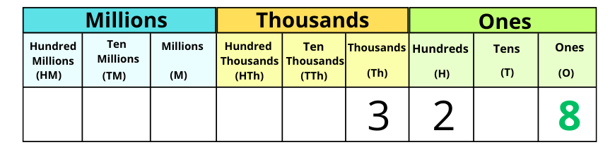
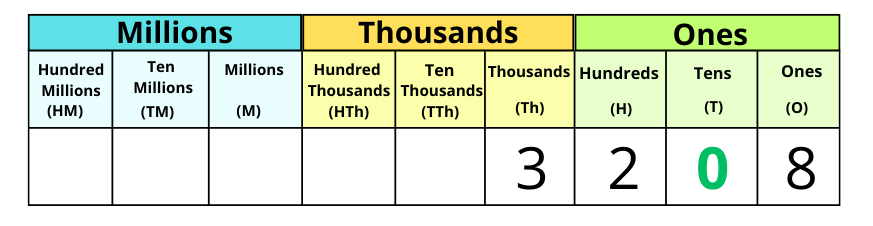

When we work with numbers, there are two fun ways to show them: Standard Form and Expanded Form. Let’s explore both and see how they help us understand numbers better!
Standard Form
This is the usual way we write numbers, as a single whole number.
Example:
The number 572 in standard form is written just like this: 572
Expanded Form
Think of a Slinky toy—it starts small and tight but stretches out when you pull it. Expanded form does the same thing! It stretches out a number to show the value of each digit.
Let’s break it down with some examples:
Example 1: Number 2,481
Using place value, we break it down:
- 2 thousands = 2,000
- 4 hundreds = 400
- 8 tens = 80
- 1 one = 1

So, the number 2,481 in expanded form is:
2,000 + 400 + 80 + 1
Example 2: Number 9,284,153
Using place value:
- 9 millions = 9,000,000
- 2 hundred thousands = 200,000
- 8 ten thousands = 80,000
- 4 thousands = 4,000
- 1 hundred = 100
- 5 tens = 50
- 3 ones = 3

So, the number 9,284,153 in expanded form is:
9,000,000 + 200,000 + 80,000 + 4,000 + 100 + 50 + 3
Let's fill in the missing number for 738,526 in expanded form:

Find the missing place value:
- The missing number is in the ten thousands place.
- The 3 in the ten thousands place represents 30,000.
So, the missing number is 30,000.
Final answer:

How to convert a number from expanded from to standard form:
Let’s say we want to convert 8 + 3000 + 200 into standard from:
Step 1: Check the order of the numbers.
Make sure the biggest number (with the most digits) is first and the smallest number is last.
In this case, we already have: 3000 + 200 + 8.
Take the first (largest) number to add and write down the digit in the correct place in the chart.
The largest number is 3000 so we put 3 in the thousands column.

Take the second number to add and write down the digit in the correct place in the chart.
The second number to add is 200, so we put a 2 in the hundreds column.

Take the last number to add and write down the digit in the correct place in the chart.
The last number to add is 8, so we put this in the ones column.

When you have finished writing down all the digits, look at the chart and put a zero in any columns with no digits. These are called placeholders.
There are no digits in the tens column so we need to put a 0 in the tens place in the chart as a placeholder.

So our final answer is 8 + 3000 + 200 = 3208.